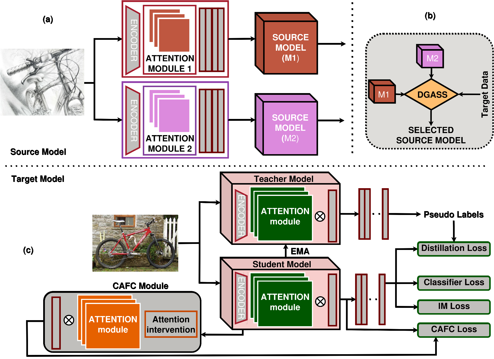
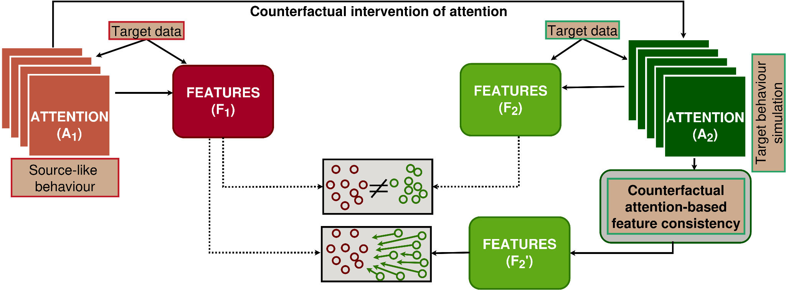

01◎
Counterfactual
attention
Construct uniform, random, and reversed attention maps to stress-test reliance on learned attention.
CAFC · PERTURBATIONS
Affiliations and author links will be added after confirmation.

Visual recognition under domain shift is hindered by two complementary problems: attention can drift toward spurious or background regions, and source-free adaptation often initializes from one fixed model regardless of the target domain gap.
We introduce DGA-CAFC, combining Counterfactual Attention-based Feature Consistency (CAFC) and Domain-Gap Aware Source Model Selection (DGASS). CAFC encourages stable attention-conditioned features under counterfactual-inspired perturbations; DGASS uses unlabeled target prediction entropy to choose an appropriate source initialization.
CAFC also acts as a lightweight regularizer for domain generalization, without requiring target data during training.
Attention stability. Gap-aware initialization. Domain robustness.

Figure 1 · CAFC. Counterfactual attention-based feature consistency encourages stable representations when attention changes across domains.
Two complementary modules address distinct weaknesses in source-free domain adaptation.
Construct uniform, random, and reversed attention maps to stress-test reliance on learned attention.
Align representations under learned and counterfactual attention to improve resistance to attention drift.
Estimate target uncertainty from unlabeled predictions and select the source variant best suited to the estimated shift.
Average top-1 accuracy (%) under the source-free domain adaptation protocol.
sfda-comparison.pngdg-comparison.png@inproceedings{dgacafc2027,
title = {Attention Drift Regularization with Adaptive Initialization for Domain-Robust Visual Recognition},
booktitle = {IEEE/CVF Winter Conference on Applications of Computer Vision (WACV)},
year = {2027}
}Contact details will be added when the final author and corresponding-author information is provided.